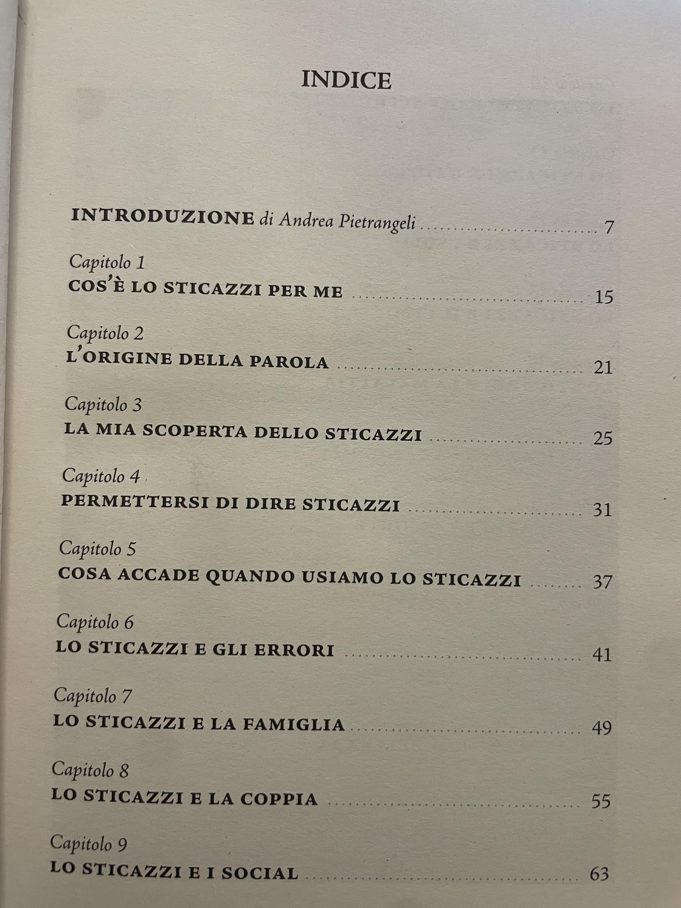

la mia scheda personale
- samuele campiello
- 16 anni
- 3° B LSA
- I.I.S. J.C. Maxwell
- 11 gennaio 2008
- vinovo
Mi chimao Samuele campiello e ho 16 anni, vivo a garino, vicino a nichelino, pero le elementari le ho fatte a vinovo.
Sono una persona molto sportiva anche se però tento a non parlare spesso .
Penso che un aspetto inportante della mia vita e che cerco sempre di impegnarmi in quello che faccio
anche se spesso cerco di non farlo vedere.
Alcune passioni che mi caratterizzinano :
- La palestra perchè mi piace tenermi in forma e comuqnue avere del tempo per me stesso
in cui potermi dedicare a qualcosa che mi piace per poter anche migliore me stesso
- i videogiochi, perchè oltre che mi piace giocare in generale insime ai miei amici
pesno sia anche un modo diverso di comunicare e magari di imparare cose anche ad
esempio in campo storico con gli assansins creed. uno dei miei giochi preferiti appunto
è assasins creed valallah
- la musica, anche se in un certo senso in modo un po minore perchè alscolto in po di tutto
anche se quando ho voglia di ascoltare qualcosa, ascolto principalmente musica che si potrebbe
considerare triste ma perchè hanno un ritmo piu tranquillo e mi piace anche capire il testo delle
canzo anche perchè le ascolto principalmente in inglese
ho sviluppato molte abili nel corso della mia vita ma se dovessi scenglierne tre direi :
- l'abilità di organizzarmi, l'ho sviluppata da quando sono piccolo principalmente a causa del fatto
che ho fatto per 10 anni nuoto agonistico e gli allenmaneti occupana buona parte della giornata
quindi col tempo ho imparato ad organizzarmi tutto quello che ho da fare in tempistiche quasi precise.
- l'abilita di saper ascoltare ed avere una mentalità aperta, non so di preciso quando l'ho sviluppata
ma sono sempre stato propenso ad ascoltare chiunque mi chieda aiuto o abbia bisogno di parlare
e penso sia una capacita molto importante che purtroppo poche persone possiedono, anche perchè mi ha
aiutato in diverse situazioni difficili ma anche a capire e analizzare meglio le persone .
- riuscire a "leggere tra le righe" sia le parole delle persone ma anche il loro comportamneto, perchè
essendo una persona silenziosa sono sempre stato più predisposto ad osservare ed ascoltare le persone
e quindi in un certo senso riesco a capiere anche la loro mentalità, ma noto anche i minimi cambiamenti
nelle persone in base a come parlarlano e come si atteggiano.
Una volta finite le superiori di sicuro penso che continuero gli studi in un università, purtroppo però
non ho ancora una indea in testa di che cosa fare sia come corso di studi che come lavoro futuro..
Personalmente non ho una vera frase che penso che mi rappresenti, ma c'è un libro che mi è rimasto impresso
anche se a me non piace leggere, e acnhe se il titolo può sembrare scurrire, il libro e tutto il contrario.
il titolo del libro è "STICAZZI LA SUPREMA VIA DELLA LEGGEREZZA" che nella maggior parte dei casi penso sia
quello che mi rappresenti.
nelle successive foto si vedono la copertina del libro e i paragrafi in cui e diviso, per far capire più o meno
di cosa parla nel libro dato che a vederlo cosi molte persone potrebberlo frainterlo.
